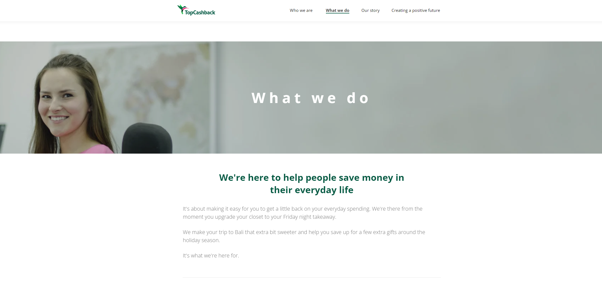
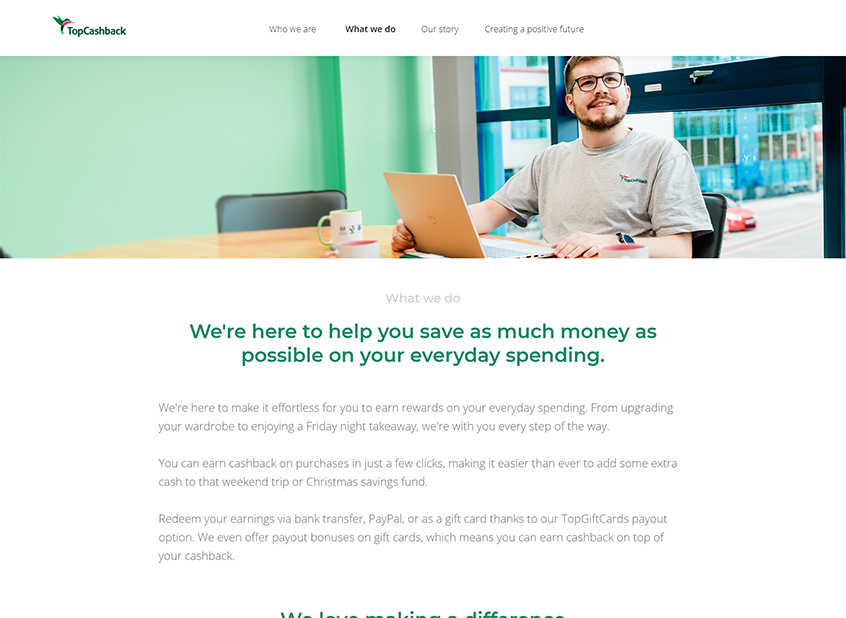

A large project in which I was tasked to lead the redesign & development of the TopCashback About Us
pages.
My roles within the project:
Performed initial testing and analysis through heatmapping to learn how users typically interact
with the page.
Performed user research through paid surveys to determine what habits users have, and what "About
us" content might lead them to gain trust in a new website or service.
Ran frequent meetings with TopCashback's Marketing and PR team to develop page content.
Worked closely with TopCashback's SEO specialists to determine how best to boost the pages' SEO, as
well as thinking about how best to cater for prospective members, and what they key words they might
search for.
Worked on several design iterations, working closely with the Design/UX team to refine them.
I have begun developing the updated pages, with completion expected in October 2024.
Legacy "About us" pages

Problems
Outdated design, using old imagery and brand colours.
Inaccessible content, lack of alt text and keyboard accessibility.
Responsiveness issues, with some content becoming very small on some mobile devices.
Inefficient layout method, confined to using "floats" due to outdated Bootstrap grid implementation
when the page was built.
New "About us" pages

Improvements
Much friendlier feel, making use of high quality up-to-date photography.
Accessible design and development.
Greatly-improved responsiveness. Moved from Bootstrap to CSS Grid, with pages now responding
properly and not decreasing in size unnecessarily at mobile screen widths.
Much more up-to-date with the latest brand styles.
Greatly increased performance, with much quicker load times due to bundling and compressed images.
Greatly improved SEO through key word usage and proper layout of headers/content.
Overall, a huge improvement with represents the TopCashback brand in a positive and exciting way.
*Bonus: I get to feature in one of the page header images!